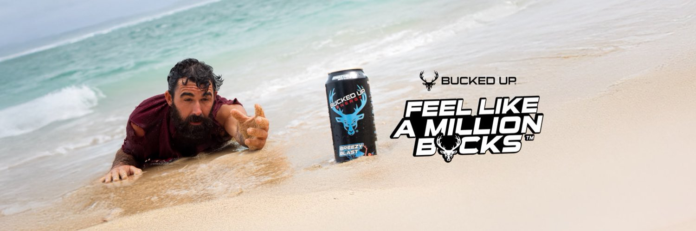

INDEPENDENT CONCEPT / PROPOSED HQ ROUTE
Bootcamp Companion
Four programs.
One tailored experience.
A separate branded prototype exploring how the experience could support every current Iron Harvest program. It shows a possible direction for an HQ conversation.
Try the four-program demo ↗Back to the portfolio
THE ORIGIN
How it differs
This version is designed around the Bucked Up brand and four program choices: BAMF Builder, LFG Burn, BABE Body and WOKE At-Home. It expands the personal Builder-only idea into a program-specific companion preview.
THE POSSIBILITY
What the HQ opportunity could be
Discover whether a smoother daily training experience would help people stay engaged and build a longer relationship with the brand. Any paid pilot, program distribution, data access, software rights or national rollout would need the appropriate team’s agreement.
BUILD STATUS
What to expect.
Working in this demo
Eight-week targets, seven-day plans, official demonstrations, rep/time/class completion, rest timers, program-separated session summaries and links to nutrition, check-ins, resources and support.
What is still proposed
Accounts, a secure persistent database, enrolled-program synchronization, reminders, purchase attribution, staff administration and partner reporting. Sample logs clear on reload; the partner chart contains illustrative values.
What needs validation
The official portal already provides plans, videos, nutrition and progress tools. We need participant interviews and an owner walkthrough to find a meaningful remaining gap. Better workout engagement alone does not prove more sales.
Who it is for today
Reviewers and potential collaborators trying a concept with sample entries. It is not an official product, a live account integration or an approved corporate partnership. Program-content differences require coach review before a participant pilot.
Two distinct routes
Same origin. Different scope.
| Wumpus Builder | Bootcamp Companion | |
|---|---|---|
| Starting point | My own training and community | A branded program-wide experience |
| Programs | BAMF Builder only | Builder, Burn, BABE and WOKE |
| Business idea | Free tool + content + approved affiliate links | Potential paid product development / support |
| Local possibility | Explore a store-supported resource after discovery | Local feedback could inform a future HQ proposal |
| Authority | No Rexburg commission or approval established | No corporate product approval established |
WORKING DEMO
See the experience.
Open the full app ↗Load an embedded preview
Have a problem worth exploring?
I would start with a conversation, an existing-workflow review, and one small test. Local feedback and corporate decisions are separate routes.
Talk with Misael ↗